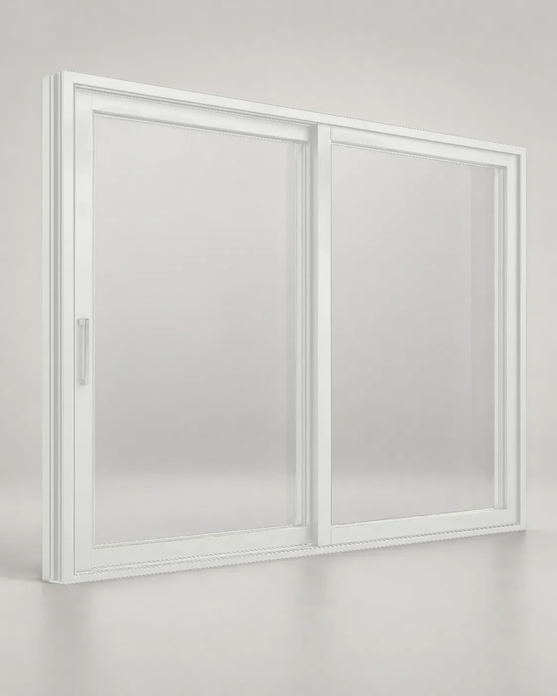
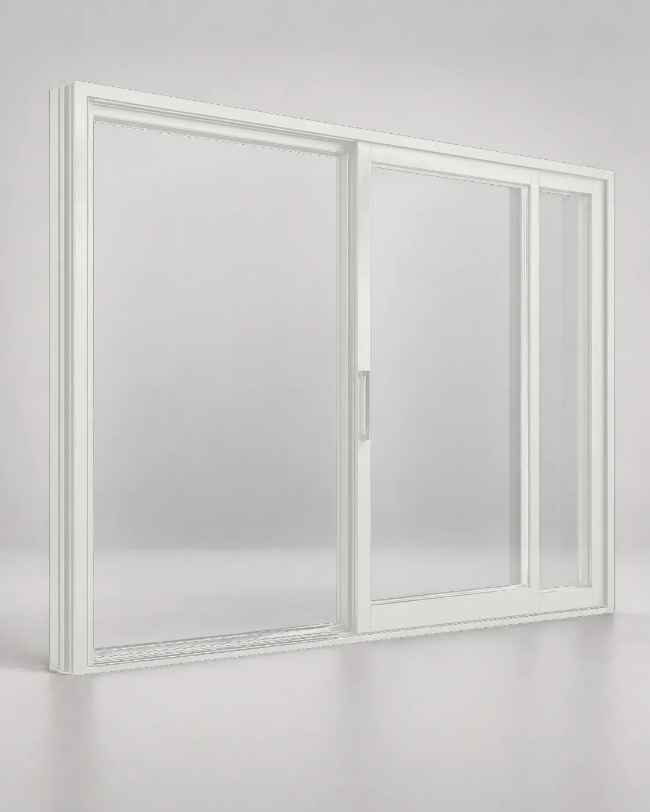

A1 · Белый RAL 901601 · Конфигурация
Большой стеклянный проём без распашной створки.
Двухсекционный подъёмно-раздвижной портал для ежедневного выхода из гостиной или кухни-столовой на террасу. Активная створка движется параллельно фиксированной и не занимает пространство комнаты. Артикул фиксирует размер, цвет и схему; если архитектура требует другого решения, рассчитываем отдельную конфигурацию.

Система внутри архитектуры
Гостиная · кухня-столовая · терраса. Портал подбираем по проёму, планировке и маршруту движения, а не только по размеру из каталога.
Инженерная спецификация
Поставщиков и комплектующие показываем на техническом уровне. Итоговые характеристики конкретной конструкции подтверждаются после расчёта размера и стеклопакета.
- Створка до 3000 мм по ширине
- Створка до 3100 мм по высоте
- Вес створки до 400 кг
02 · Под проект
Не нашли точный вариант?
Проверим геометрию створок и допустимый вес стекла.
Подберём цвет под фасад, кровлю и другие алюминиевые элементы.
Безопасность, акустика, солнцезащита и теплотехника — в одной формуле.
Согласуем порог, чистовой пол, гидроизоляцию и наружный водоотвод.
03 · Точная смета
Начнём с вашего проёма
Оставьте телефон и примерные размеры. Зафиксируем нужную конфигурацию, проверим ограничения и уточним стоимость изготовления и монтажа.